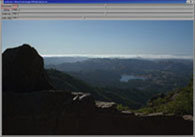
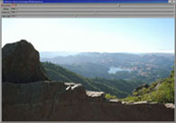

About OpenEXR
Revealing More Detail in OpenEXR Images
This section gives a short tutorial on using the exrdisplay program, which is included with the OpenEXR software distribution.
You can reveal more detail in OpenEXR images by changing the exposure using the Exposure slider. This operation is analogous to changing the exposure of a piece of film, lightening or darkening the image to reveal more detail at the high or low end.
With exrdisplay, however, changing the exposure does not affect image data itself, it simply changes the way that the original 16-bit floating-point pixel values in the image are converted to 8-bit integer data in the frame buffer. We call the original 16-bit FP pixels the "raw" image data, and the converted 8-bit pixels the "cooked" image data. When you change the exposure, you are "re-cooking" the data.
For example, in the following image you can see the light areas (fog) very
clearly but in the dark areas (rock closest to camera) the detail is too dark to
see. By changing the exposure to positive 3 (taking the image up 3 stops)
the detail in the dark areas becomes visible. However, you lose the detail in
the light areas because it is now too bright to see.
| Original image 0 exposure |
Same image Exposure adjusted to positive 3 |
|  |  |
| (click for larger image) | (click for larger image) |

How Your Image Is Displayed
The Viewer has other sliders that you can use to specify how your 16-bit OpenEXR image is displayed on your 8-bit monitor:
- Exposure - sets the apparent exposure of the image on the display. It lightens or darkens the displayed image, allowing you to reveal detail in the high or low end.
- Defog - subtracted from pixel values to compensate for fogging due to stray light in the recording device.
- kneeHigh and kneeLow - pixel values between kneeHigh and kneeLow set the white level of the displayed image, determining which value is mapped to the maximum intensity of the monitor (exrdisplay lets you set the white level between 3.5 and 7 f-stops above middle gray).
The actual process for conversion from raw data to data ready for the display card happens like this (as taken from comments from the exrdisplay source code):
- Compensate for fogging by subtracting defog from the raw pixel values.
- Multiply the defogged pixel values by 2(exposure + 2.47393).
- Values, which are now 1.0, are called "middle gray." If defog and exposure are both set to 0.0, then middle gray corresponds to a raw pixel value of 0.18. In step 6, middle gray values will be mapped to an intensity 3.5 f-stops below the display's maximum intensity.
- Apply a knee function. The knee f unction has two parameters, kneeLow and kneeHigh. Pixel values below 2kneeLow are not changed by the knee function. Pixel values above kneeLow are lowered according to a logarithmic curve, such that the value 2kneeHigh is mapped to 23.5 (in step 6, this value will be mapped to the display's maximum intensity).
- Gamma-correct the pixel values, assuming that the screen's gamma is 2.2.
- Scale the values such that middle gray pixels are mapped to 84.66 (or 3.5 f-stops below the display's maximum intensity).
- Clamp the values to [0, 255].